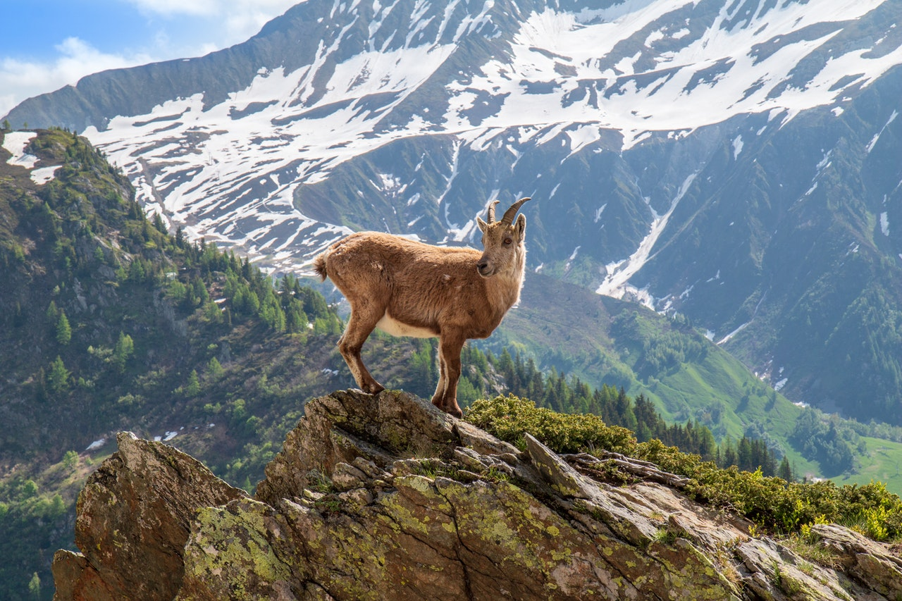

Examples for "Pixel Resolution" and "Art Direction".
Note that these techniques alone do not solve all problems regarding responsive web design. They should be used together with responsive CSS (e.g. flexbox, CSS grid, relative width/height, max-width, max-height, img object-fit, media queries, etc.), as well as lazy loading, progressive loading, and graceful loading. But these two HTML based techniques can save a lot on bandwidth and load time, thus adding a lot to the performance of the website, by enabling the browser to load the smallest possible image for each screen size and screen resolution.
From MDN: "The problem whereby you want to serve smaller image files to narrow-screen devices, as they don't need huge images like desktop displays do — and to serve different resolution images to high density/low density screens. You can solve this problem using vector graphics (SVG images) and the srcset with sizes attributes."
In this example:
The loaded picture:
From MDN: "The problem whereby you want to serve cropped images for different layouts — for example a landscape image showing a full scene for a desktop layout, and a portrait image showing the main subject zoomed in for a mobile layout. You can solve this problem using the picture element."
In this example:
If the browser doesn't support the "picture" HTML element, the default (landscape) JPG gets loaded.
The loaded picture:
Useful link, and the source of this simplified example:
https://developer.mozilla.org/en-US/docs/Learn/HTML/Multimedia_and_embedding/Responsive_images